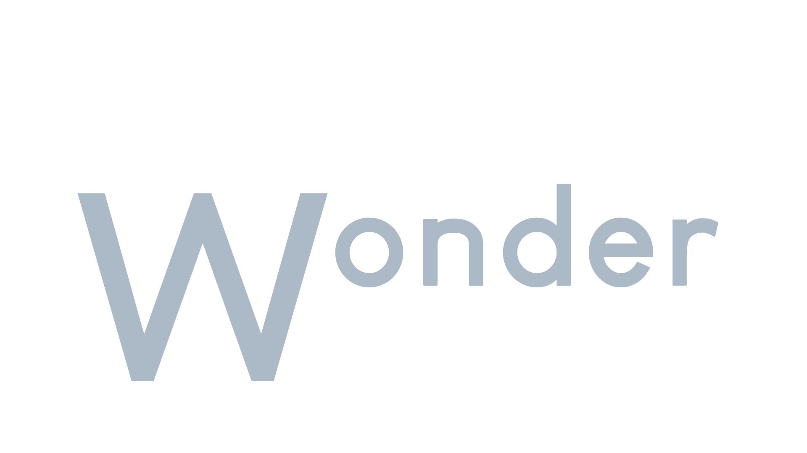

ABOUT OUR WEBSITE
Welcome to Whisker Wonder! Your ultimate destination for
all things feline, Whisker Wonder offers comprehensive
information on various cat breeds to help you understand and
appreciate your furry friends better. Dive into our detailed
guides and learn about the unique characteristics, histories, and
care tips for each breed. Don't forget to check out our memes page
for a daily dose of humor, purrfect for cat lovers everywhere.
USEFUL LINKS
The Cat Fanciers' Association
American Association of Feline Practitioners (AAFP)
Lexington Humane Society
CATalist Council
CONTACT US